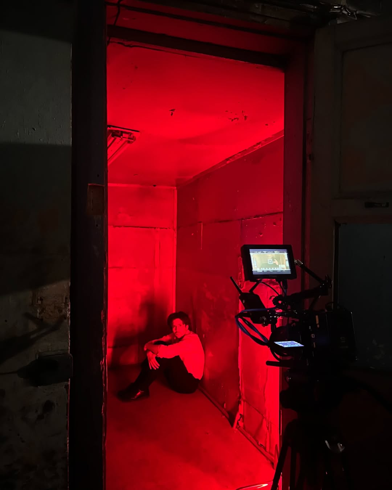
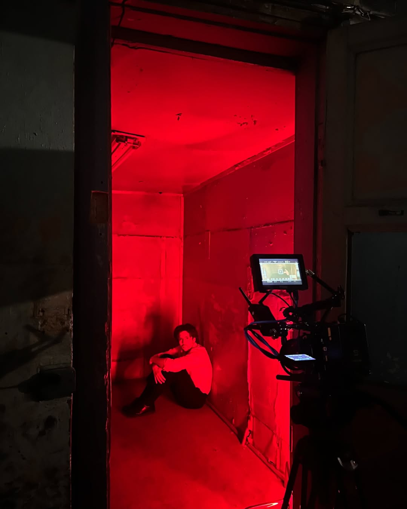

У кліпі «Industrial Стус» The OPG з'являються в образах українського митця періоду «розстріляного відродження»/«шістдесятництва» та ката КДБ. Робота демонструє знущання совєцької влади над інтелігенцією та свідомою молоддю нашої країни. Головна ідея відео в тому, що на кожного ката чекає справедлива розплата.
Gallery
 

Details
Dir: Максим Кібкало
DoP: Дмитро Обухов
Cast:
Нікіта Лютий
Влад Радченко
Editing:
Максим Кібкало
Дмитро Обухов
Color: Дмитро Обухов
Спонсор: Веро Юзепчук
Гример: Наталія Нікітіна
Хелпери:
Таїсія Акжитова
Антон Ольховський
Олександра Коваленко
Ярослав Матусевич
Златослава Тернова
2024
DoP: Дмитро Обухов
Cast:
Нікіта Лютий
Влад Радченко
Editing:
Максим Кібкало
Дмитро Обухов
Color: Дмитро Обухов
Спонсор: Веро Юзепчук
Гример: Наталія Нікітіна
Хелпери:
Таїсія Акжитова
Антон Ольховський
Олександра Коваленко
Ярослав Матусевич
Златослава Тернова
2024